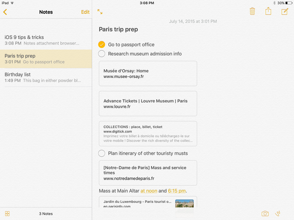

| Home | About | Blog | Books | Social Media |
Designing Tasting Notes

This week I've been grinding away at re-learning iOS development. It's been more about learning the newest best practices than literally going back to what I knew before. A lot has changed since 2008 when I first learned this stuff.
Guess what else has changed…
Apps have also become much more sophisticated. In this past iteration, Apple updated the native Notes app and it looks great. Honestly, this app already does more than Tasting Notes did before I pulled the app.
Macworld did a good job of covering the new features in Notes Basically, you could call this app Uber Notes because it's amazing: you can format text, stay in sync with your Mac and iPad notes, embed maps and photos. You can even sketch!

Apps like Evernote, OneNote and Awesome Note have become sherlocked.
Is Tasting Notes also now sherlocked?
After all, those apps above were my main competition over the years.
What is Different About Tasting Notes?
That being said, Tasting Notes was always a niche version of Notes. The difference between Tasting Notes and the other wine apps was that they all offered a type of structure, different types of information capture (text, images, lists) and the chrome was focused around wine.
Tasting Notes also had search built-in as I'm sure the others did as well. Search is now built into most apps now including the native Notes.
Tasting Notes Features
These are the major features of Tasting Notes. I marked the sherlocked features in red.
- Database like structure
- Wine specific fields
- Searching/Organization
- Note taking
- Customization
- Online backup (Dropbox)
Basically, I offered a guided experience: users would input a wine name, take a picture of the wine bottle label, rate the wine and take a note. This structure is the main difference between the more generic Notes app.
Is this enough of a difference?
I just don't know… When I started thinking about the design of Tasting Notes I wanted to move closer to a less structured design. Instead of essentially forcing users to follow a specific workflow I wanted them to chose what to do for each note. Sometimes they might quickly snap a picture and rate the wine. Other times they may only have a name from a menu and so just want to write down the name and make a note to get a bottle later.
The only problem with this is that I'm essentially removing all the unique factors of the original app.
What is the Minimum Deliverable?
It seems to me that I would have to aim to at least mimic the relevant features of Notes. So, a nice note taking UI and iCloud sync. iCloud sync means that the app should be iPad + iPhone and eventually Mac. Tasting Notes doesn't need all the features of Notes though: sketching, maps and checklists are not relevant.
Once that is in place, then I need some ideas to make Tasting Notes great.
Some Ideas
I was quickly brainstorming some ideas.
Bar code scanning. Tags to replace lists. Wine content
integrated right into the note taking UI. Voice notes.
Attention to the little details. Social features. Data
Import/Export. Markdown support. Make UI dark theme.
I think that wine content would be a good start. This is work intensive, but it's something that would really serve to distinquish Tasting Notes from other Note apps.
User Interface
I'm thinking of keeping the note screen simple. Users can basically type whatever they want. There will be a toolbar that they can use to insert photos, ratings or tags directly into the note however they want. Notes will automatically be organized into a structure based on tags. Mabye a filtering system based on tags and ratings. They will be able to put their notes into any type of folder they wish.
Losing the Original Customization Model
The original Tasting Notes was actually a database engine and users could create whatever type of structured app that they wanted. Most of the appeal was based on the limitations of the time. This customization was an answer to the friction created by the apps of that time.
I'm ditching this model. Customization was a way to distinquish Tasting Notes from other Wine Note apps. But, trying to create a general system of notes was complicated. Users didn't really understand. The UI was clunky. I think removing the structure entirely is the way to go. Include wine note related items, but don't try to enforce an artifical structure.
Tasting Notes == Wine
The original Tasting Notes was meant to be generic. This wasn't the best experience because the structure felt generic. There was no place for content. Tasting Notes is going back to the original vision of Wine Pad. This is about wine.
That's All for Now
Yikes, I have work to do. Writing about the app isn't making this go much quicker and feels overwhelming. Next time folks - I gotta get back to coding!
comments powered by Disqus